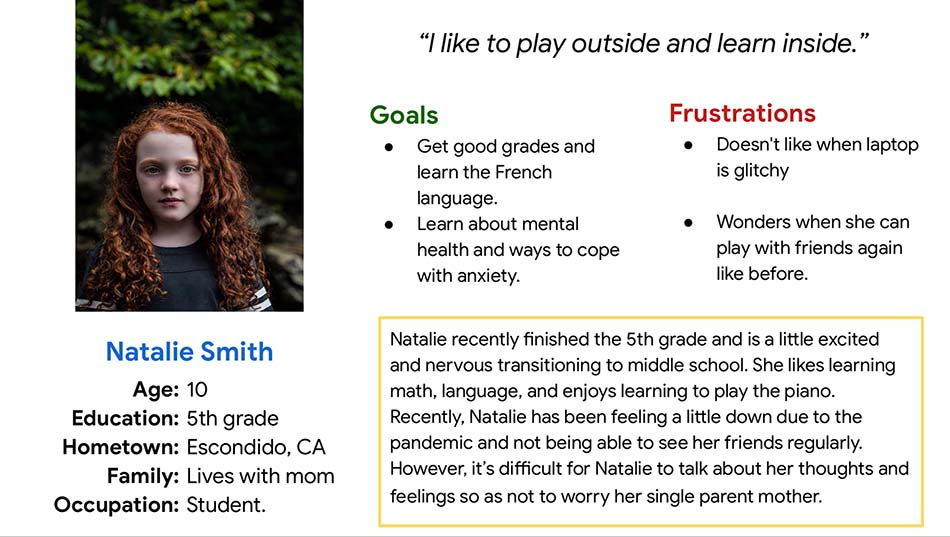

Overview
sensorybox
Project
Under the Google UX program, I designed an app for social good to help kids learn about feelings and emotions called, Sensorybox.
Target Audience
The target audience was kids from the ages of 10 to 14 years who use technology and are comfortable learning online.
Goal
Determine if the user can easily navigate through a quiz. The project was completed from June to July 2021.
Responsibilities
Designed the app from conception to delivery i.e., conducted interviews, created paper and digital wireframes, low and high-fidelity prototypes, conducted a usability study, and accounted for accessibility.
User Research
I interviewed five youths, (with their parental consent), about their thoughts and feelings regarding online learning and mental health. Moreover, I converted youth responses into a user persona.
Persona
Problem Statement
Natalie is going to be a six grader in the fall and wants to know how to control her nervousness using online tools, so she can feel confident in a new school.
Wireframes
To demonstrate learning about emotions and feelings, I designed a quiz to be as intuitive as possible and easy to navigate for use by kids and youth. For example, the quiz is properly labeled to help the user navigate what to do on each screen and displays one question at a time. The user can then tap a next arrow to view the next question.

Testing
My goal was to understand any difficulties users encountered when trying to complete the quiz. For example, I asked, “Can users select an option, check their answer, and move to the next screen without any prompting?” I conducted a moderated usability study in early June and tasked 5 kids, individually (whose parents provided consent). Each usability study session lasted about 10 minutes.
Results
1. Users had some trouble viewing the answer choices as they stated the faces looked too small. Some users moved closer to the screen to view the answer choices. Thus, users need a more magnifying view of the choices.
2. Users asked if they could skip a question and go back to it later, since they did not know the correct answer at the time. Therefore, users want more control in how they take the quiz.
3. Users asked how long the quiz was and what question they were currently in. Thus, users want to know the length of the quiz and their place in it.


For the color palette, I purposefully selected cool colors to promote a calm and peaceful feeling in younger users, yet still capture a playful and welcoming feeling. Thus, I selected two analogous colors, blue and green, and used purple and yellow to fill the accent features on buttons and other elements.
I implemented the feedback I received from the usability test and discovered some important design changes. For example, instead of lining all answer choices in one row, I split the choices into two rows to increase the size of the smiley faces for better visibility. In addition, I labeled the number of questions on the quiz. Lastly, I placed a back arrow so users can go back and view their responses, or skip ahead and come back to the question later.
In order to ensure the app was accessible, I made the font darker for better readability and increased the size of the answer choices. Future usability studies will include users of assistive technologies such as keyboards and screen readers.
One way to improve the app would be to inquire about the star-reward system and ask participants how that makes them feel. This line of research, I believe, could help inform the designer if the reward system helps improve the user experience.